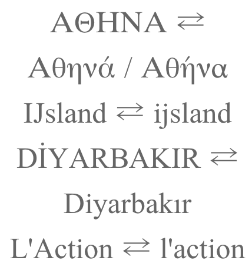

These are notes culled from various places. There may well be
some copy-pasting involved, but I did it long enough ago that I no
longer remember all the sources. But these are notes, it’s not an
article.
Case conversions are not always possible in Unicode by applying an
offset to a codepoint, although this can work for the ASCII range by
adding 32, or by adding 1 for many other characters in the Latin
extensions. There are many cases where the corresponding cased character
is in another block, or in an irregularly offset location.
In addition, there are linguistic issues that mean that simple
mappings of one character to another are not sufficient for case
conversion.
In German, the uppercase of ß is SS. German and Greek cannot,
however, be easily transformed from upper to lower case: German because
SS could be converted either to ß or ss, depending on the word; Greek
because all tonos marks are omitted in upper case, eg. does ΑΘΗΝΑ
convert to Αθηνά (the goddess) or Αθήνα (capital of Greece)? German may
also uppercase ß to ẞ sometimes for things like signboards.
Also Greek converts uppercase sigma to either a final or non-final
form, depending on the position in a word, eg. ΟΔΥΣΣΕΥΣ becomes
οδυσσευς. This contextual difference is easy to manage, however,
compared to the lexical issues in the previous paragraph.
In Serbo-Croatian there is an important distinction between uppercase
and titlecase. The single letter dž converts to DŽ when the whole word is
uppercased, but Dž when titlecased. Both of these forms revert to dž in
lowercase, so there is no ambiguity here.
In Dutch, the titlecase of ijsvogel is IJsvogel, ie. which commonly
means that the first two letters have to be titlecased. There is a
single character IJ (U+0132 LATIN CAPITAL LIGATURE IJ)
in Unicode that will behave as expected, but this single character is
very often not available on a keyboard, and so the word is commonly
written with the two letters I+J.
In Greek, tonos diacritics are dropped during uppercasing, but not
dialytika. Greek diphthongs with tonos over the first vowel are
converted during uppercasing to no tonos but a dialytika over the
second vowel in the diphthong, eg. Νεράιδα becomes ΝΕΡΑΪΔΑ. A letter
with both tonos and dialytika above drops the tonos but keeps the
dialytika, eg. ευφυΐα becomes ΕΥΦΥΪΑ. Also, contrary to the initial rule
mentioned here, Greek does not drop the tonos on the disjunctive eta
(usually meaning ‘or’), eg. ήσουν ή εγώ ή εσύ becomes ΗΣΟΥΝ Ή ΕΓΩ Ή ΕΣΥ
(note that the initial eta is not disjunctive, and so does drop the
tonos). This is to maintain the distinction between ‘either/or’ ή from
the η feminine form of the article, in the nominative case, singular
number.
Greek titlecased vowels, ie. a vowel at the start of a word that is uppercased, retains its tonos accent, eg. Όμηρος.
Turkish, Azeri, Tatar and Bashkir pair dotted and undotted i’s, which
requires special handling for case conversion, that is
language-specific. For example, the name of the second largest city in
Turkey is “Diyarbakır”, which contains both the dotted and dotless
letters i. When rendered into upper case, this word appears like this:
DİYARBAKIR.
Lithuanian also has language-specific rules that retain the dot over i
when combined with accents, eg. i̇̀ i̇́ i̇̃, whereas the capital I has
no dot.
Sometimes European French omits accents from uppercase letters,
whereas French Canadian typically does not. However, this is more of a
stylistic than a linguistic rule. Sometimes French people uppercase œ to
OE, but this is mostly due to issues with lack of keyboard support, it
seems (as is the issue with French accents).
Capitalisation may ignore leading symbols and punctuation for a word,
and titlecase the first casing letter. This applies not only to
non-letters. A letter such as the (non-casing version of the) glottal
stop, ʔ, may be ignored at the start of a word, and the following letter
titlecased, in IPA or Americanist phonetic transcriptions. (Note that,
to avoid confusion, there are separate case paired characters available
for use in orthographies such as Chipewyan, Dogrib and Slavey. These are
Ɂ and ɂ.)
Another issue for titlecasing is that not all words in a sequence are
necessarily titlecased. German uses capital letters to start noun
words, but not verbs or adjectives. French and Italian may expect to
titlecase the ‘A’ in “L’Action”, since that is the start of a word. In
English, it is common not to titlecase words like ‘for’, ‘of’, ‘the’ and
so forth in titles.
Unicode provides only algorithms for generic case conversion and case
folding. CLDR provides some more detail, though it is hard to
programmatically achieve all the requirements for case conversion.
Case folding is a way of converting to a standard sequence of
(lowercase) characters that can be used for comparisons of strings.
(Note that this sequence may not represent normal lowercase text: for
example, both the uppercase Greek sigma and lowercase final sigma are
converted to a normal sigma, and the German ß is converted to ‘ss’.)
There are also different flavours of case folding available: common,
full, and simple.


{kind=link}
{kind=link}
{kind=link}
{kind=link}
{kind=link}
{kind=link}
November 7th, 2016 at 4:43 am
Isn’t Adlam bicameral?
November 7th, 2016 at 9:30 am
Yes, indeed. Hmmm. I used http://unicode.org/cldr/utility/list-unicodeset.jsp?a=%5B:General_Category=Uppercase_Letter:%5D to find the cased letters, but it seems that that CLDR table doesn’t know about Adlam or Osage (which is also bicameral) :(. I searched using UniView instead, and added Adlam and Osage to the list, plus a note about Mathematical Alphanumeric Symbols. Thanks, Amir.